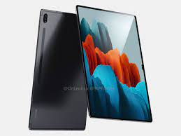

DEVICES
laptop
laptop, laptop computer, or notebook computer is a small, portable personal computer (PC) with a screen and
alphanumeric keyboard. Laptops typically have a clam shell form factor with the screen mounted on the inside
of the upper lid and the keyboard on the inside of the lower lid, although 2-in-1 PCs with a detachable
keyboard are often marketed as laptops or as having a laptop mode. Laptops are folded shut for
transportation, and thus are suitable for mobile use.[1] Its name comes from lap, as it was deemed practical
to be placed on a person's lap when being used. Today, laptops are used in a variety of settings, such as at
work, in education, for playing games, web browsing, for personal multimedia, and for general home computer
use
mobile

A mobile phone, cellular phone, cell phone, cellphone, handphone, or hand phone, sometimes shortened to
simply mobile, cell, or just phone, is a portable telephone that can make and receive calls over a radio
frequency link while the user is moving within a telephone service area. The radio frequency link
establishes a connection to the switching systems of a mobile phone operator, which provides access to the
public switched telephone network (PSTN). Modern mobile telephone services use a cellular network
architecture and, therefore, mobile telephones are called cellular telephones or cell phones in North
America. In addition to telephony, digital mobile phones (2G) support a variety of other services, such as
text messaging, MMS, email, Internet access, short-range wireless communications (infrared, Bluetooth),
business applications, video games and digital photography. Mobile phones offering only those capabilities
tablets

tablet computer, commonly shortened to tablet, is a mobile device, typically with a mobile operating system
and touchscreen display processing circuitry, and a rechargeable battery in a single, thin and flat package.
Tablets, being computers, do what other personal computers do, but lack some input/output (I/O) abilities
that others have. Modern tablets largely resemble modern smartphones, the only differences being that
tablets are relatively larger than smartphones, with screens 7 inches (18 cm) or larger, measured
diagonally,[1][2][3][4] and may not support access to a cellular network.
The touchscreen display is operated by gestures executed by finger or digital pen (stylus), instead of the
COMMON DEVICES WE USE THE MOST